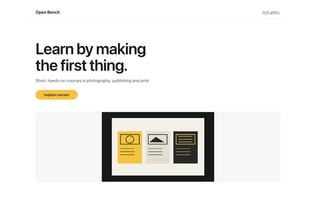
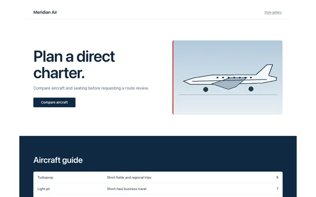
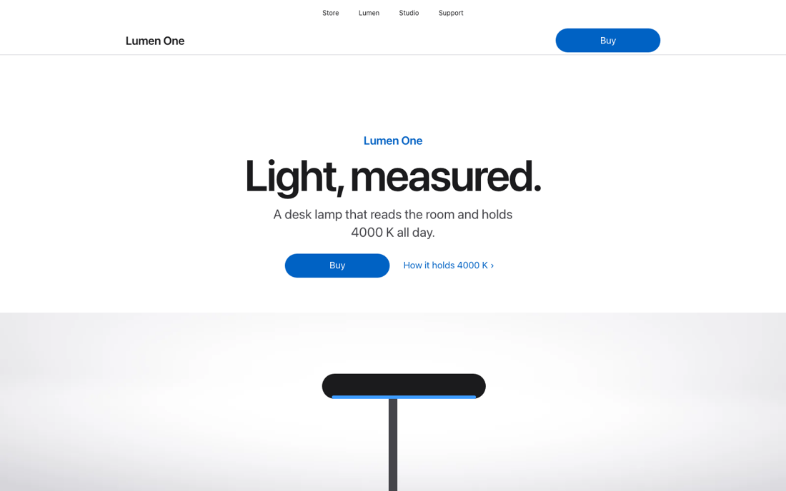
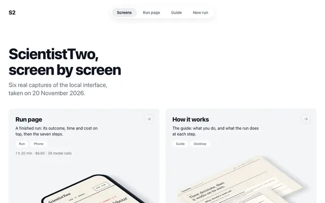
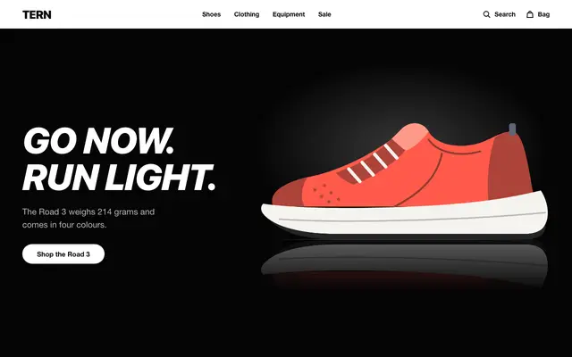
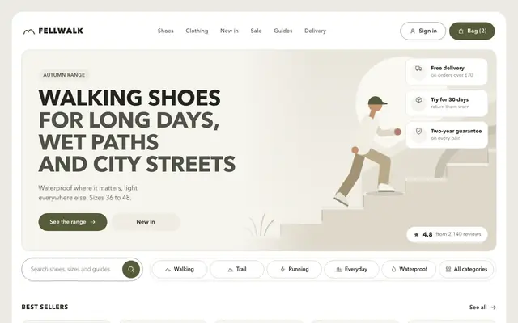
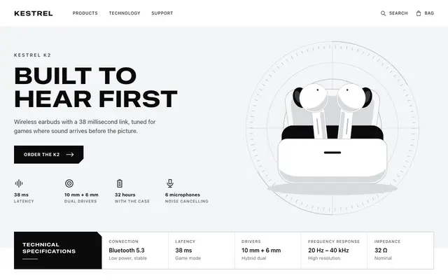
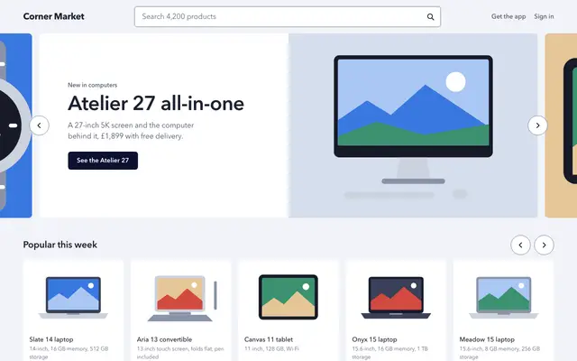
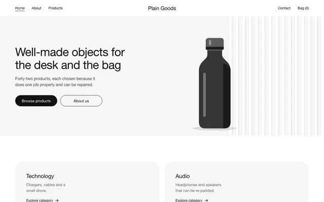

Coastal Editorial
Coastal Editorial
Tideward · Airy travel editorial with sea-grey framing, periwinkle and rounded photo slots.
Explore all eighteen design directions. Each uses the preset’s own tokens and a fictional brief, except Folio Split, which shows a real interface.
Coastal Editorial
Tideward · Airy travel editorial with sea-grey framing, periwinkle and rounded photo slots.
 Blueprint Mono
Blueprint Mono
Datum Workshop · Monochrome architectural presentation with specimen-like structure and aligned data.
 Marigold Report
Marigold Report
Northline Research · Report cover and findings spread with a marigold metric block and print-like rules.
 Atelier Warm
Atelier Warm
Stillroom Studio · Oat and coffee tones, poster-scale type, and material-led art direction for a studio.
 Terracotta Commerce
Terracotta Commerce
Clayline Home · Warm retail palette, terracotta actions, lifted product cards and a dark collection band.
 Midnight Showroom
Midnight Showroom
Vector Motoring · Luxury showroom with a near-black stage, amber accents and uppercase display type.
 Broadcast Light
Broadcast Light
Undercurrent Radio · Daylight media index with a black program band, platform links and an episode shelf.
 Studio Kinetic
Studio Kinetic
Switchback Studio · Monochrome agency page using a grid, pill actions and staggered process cards.

Campus BrightOpen Bench · High-contrast course catalogue with yellow actions and alternating light and dark bands.

Charter NavyMeridian Air · Corporate aviation layout with navy framing, white content cards and a restrained red rule.
 Dispatch Yellow
Dispatch Yellow
Dayline Dispatch · Safety-yellow service page with black type, flat panels and a checkered dispatch stripe.

Gallery WhiteLumen One · Quiet studio lighting, generous white space and one blue action.

Folio SplitScientistTwo · An index of work: equal pale-grey tiles, each with one large, sharp capture running off its edge.

Sprint StageTern · A black first screen, a slanted heavy headline and one shoe standing on its reflection.

Olive OutfitterFellwalk · One rounded warm-white sheet, a picture that fades in from the right and dark-olive pill buttons.

Chamfer SpecKestrel Audio · White, silver and black, wide uppercase type, corners cut at 45° and a ruled strip of specifications.

Market ShelfCorner Market · White product cards on shelves that scroll sideways, with the price as the heaviest text.

Mono CataloguePlain Goods · A white page, pale-grey tiles with very large corners and every product in greyscale.